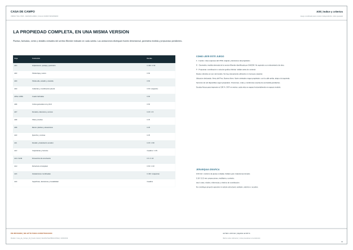
Virrey del Pino · Buenos Aires · Cedro Misionero
La propiedad, en planos.
19 láminas A2 con implantación, plantas, fachadas, cortes y detalles. Incluyen el estudio de 3,20 m libres, la vivienda de 2,60 m, los accesos, la pileta y los esquemas de estructura e instalaciones.
Entrega en revisión · modelo Pass1c. Estas láminas documentan las correcciones de escalera, umbrales y pluviales. El visor principal conserva la versión publicada anterior mientras se verifica su actualización. La última auditoría integral obtuvo 6,9/10; el umbral de aprobación es 9,5. Las propuestas y verificaciones pendientes se identifican en cada lámina. No es un proyecto ejecutivo aprobado para construcción.
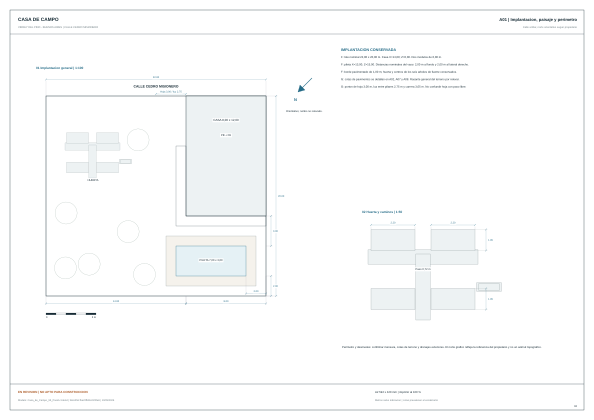
A01 · Implantacion, paisaje y perimetro
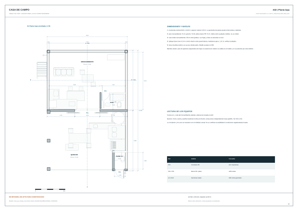
A02 · Planta baja
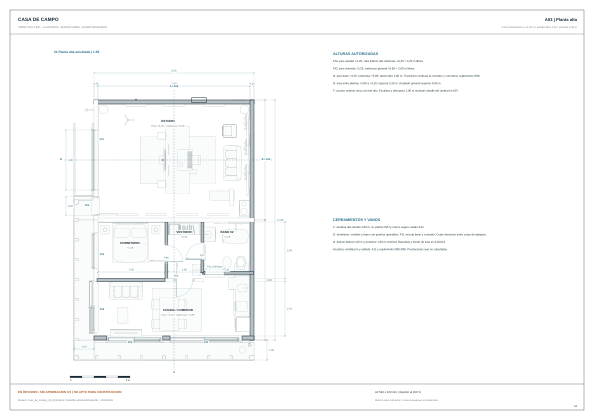
A03 · Planta alta
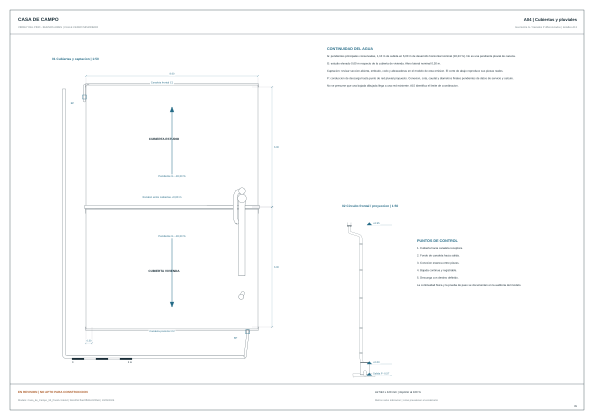
A04 · Cubiertas y pluviales
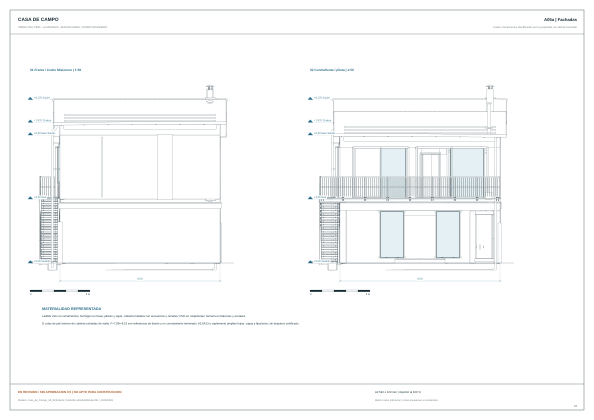
A05a · Fachadas
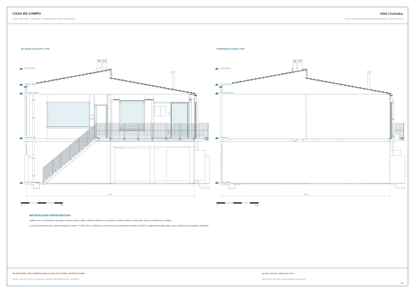
A05b · Fachadas
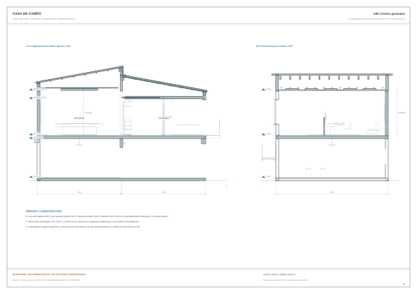
A06 · Cortes generales
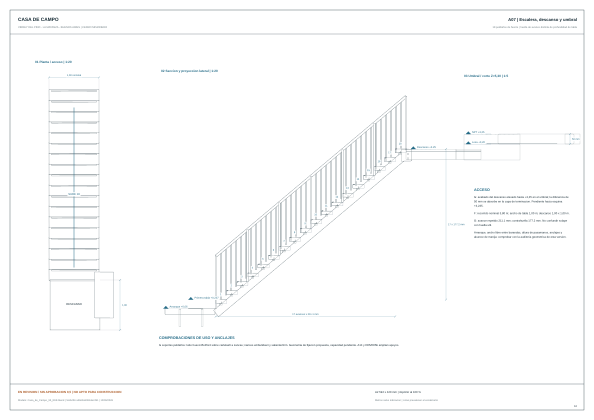
A07 · Escalera, descanso y umbral
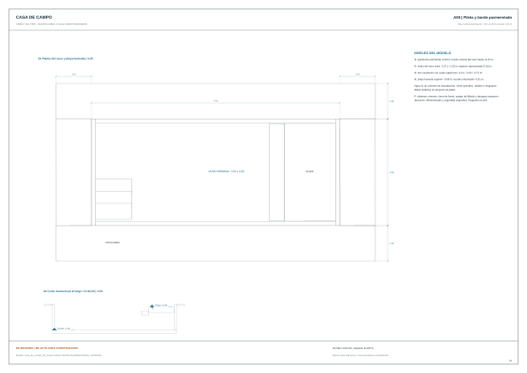
A08 · Pileta y borde pavimentado
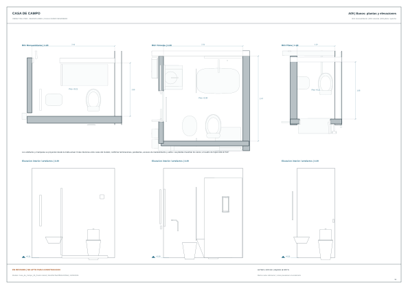
A09 · Banos: plantas y elevaciones
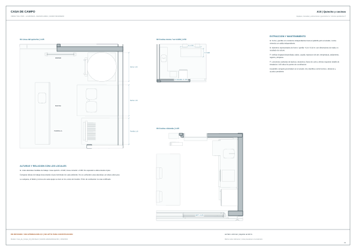
A10 · Quincho y cocinas
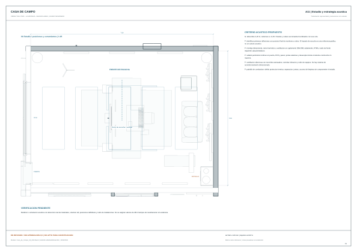
A11 · Estudio y estrategia acustica
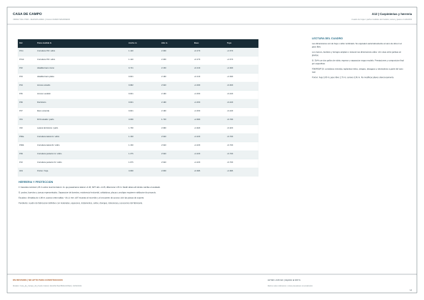
A12 · Carpinterias y herreria
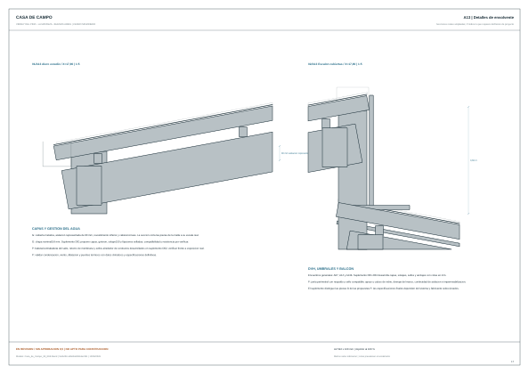
A13 · Detalles de envolvente
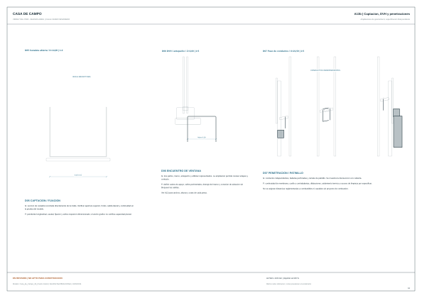
A13b · Captacion, DVH y penetraciones
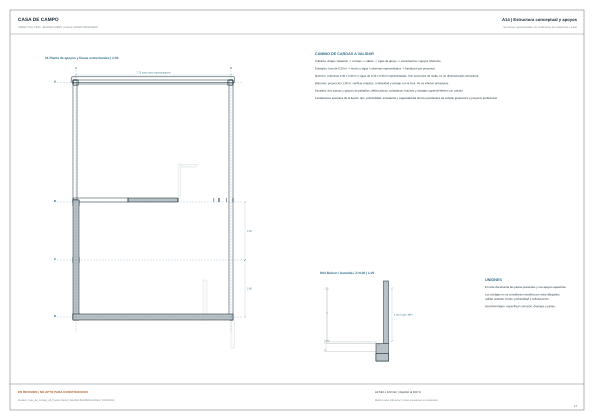
A14 · Estructura conceptual y apoyos
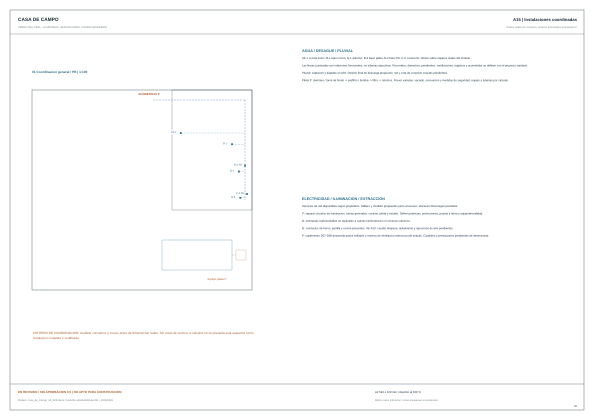
A15 · Instalaciones coordinadas
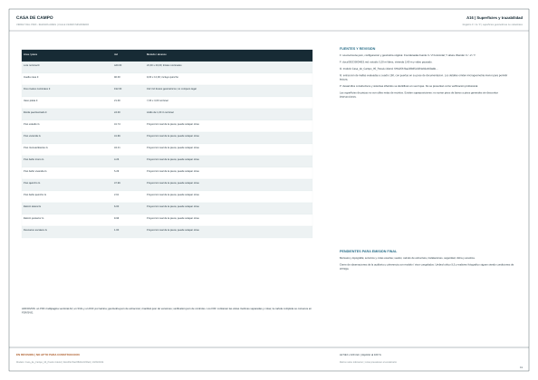